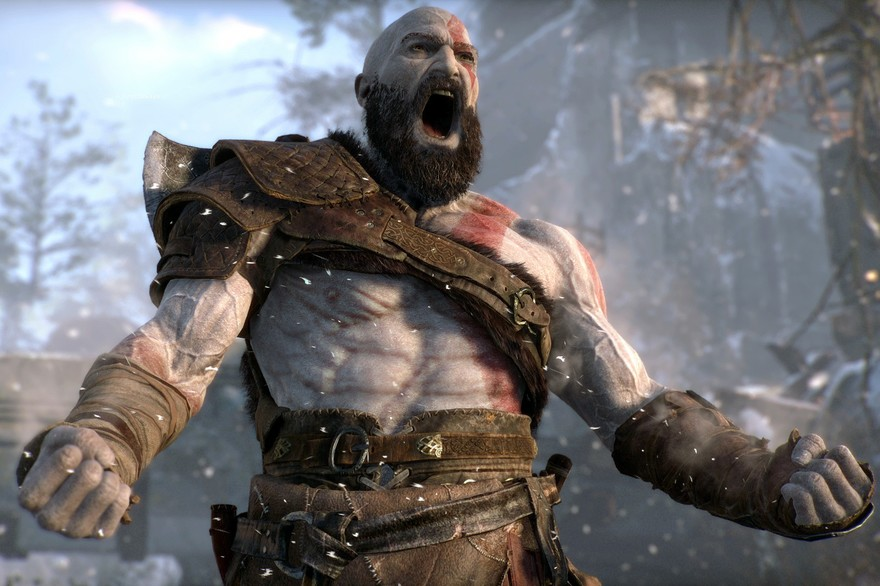
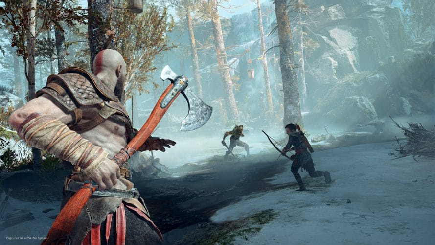

Le joueur incarne un redoutable guerrier, Kratos, qui se retrouve confronté à un grand nombre d'ennemis. L'évolution du joueur est suivie en travelling dans une vue à la troisième personne, avec certains passages présentés en plan fixe. Ce système changera complètement avec la venue du futur God of War sur PlayStation 4 avec une caméra beaucoup plus proche de Kratos que l'on pourra déplacer. Ce système donne un effet très similaire au jeu vidéo The Last of Us.
 L'univers du jeu est entièrement créé par Insomniac Games en collaboration avec Marvel Games et ne reprend pas celui des comics et des univers cinématographiques de l'homme araignée. Certains des personnages du jeu n'ont, de ce fait, pas le même rôle que dans les comics. Néanmoins, certains lieux associés à l'univers des comics de Marvel sont présents tels que l'ambassade du Wakanda et la Tour des Avengers.
Alors que Nathan est âgé de 13 ans et se trouve à l’orphelinat catholique, son grand frère Samuel devenu voleur lui fait faire le mur pour l'emmener secrètement dans la demeure d'une grande archéologue possédant des affaires appartenant à leur mère qui a été sa collègue. Repérés par la vieille femme qui alerte la police, cette dernière les reconnait néanmoins et accepte de leur laisser ses notes avant de mourir d'une crise cardiaque. Les deux frères doivent fuir et comprennent qu'ils doivent changer d'identités ; se rappelant que leur mère a été persuadé que le légendaire explorateur Francis Drake avait des héritiers cachés, ils décident d'adopter son nom pour commencer leurs nouvelles vies.